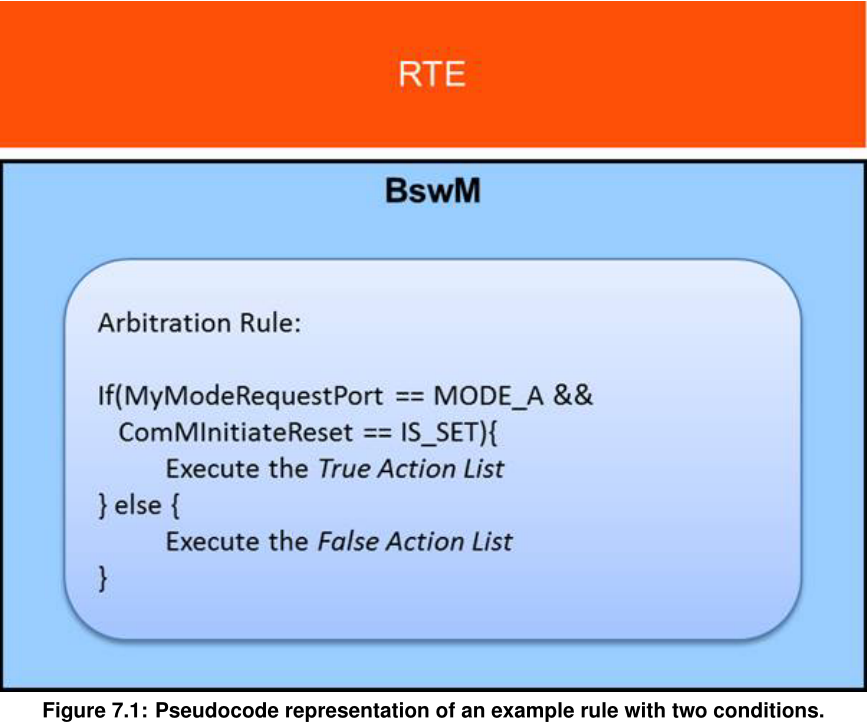
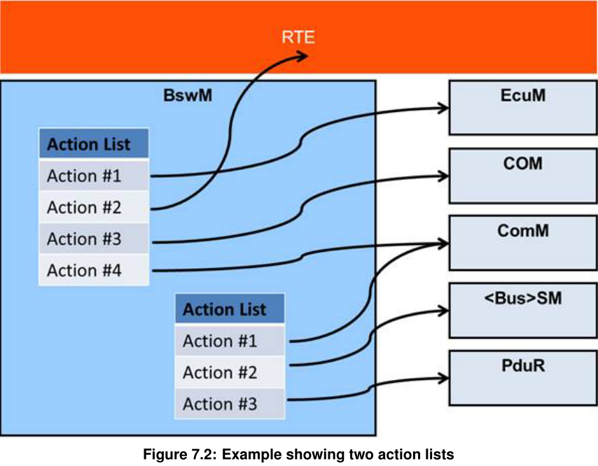
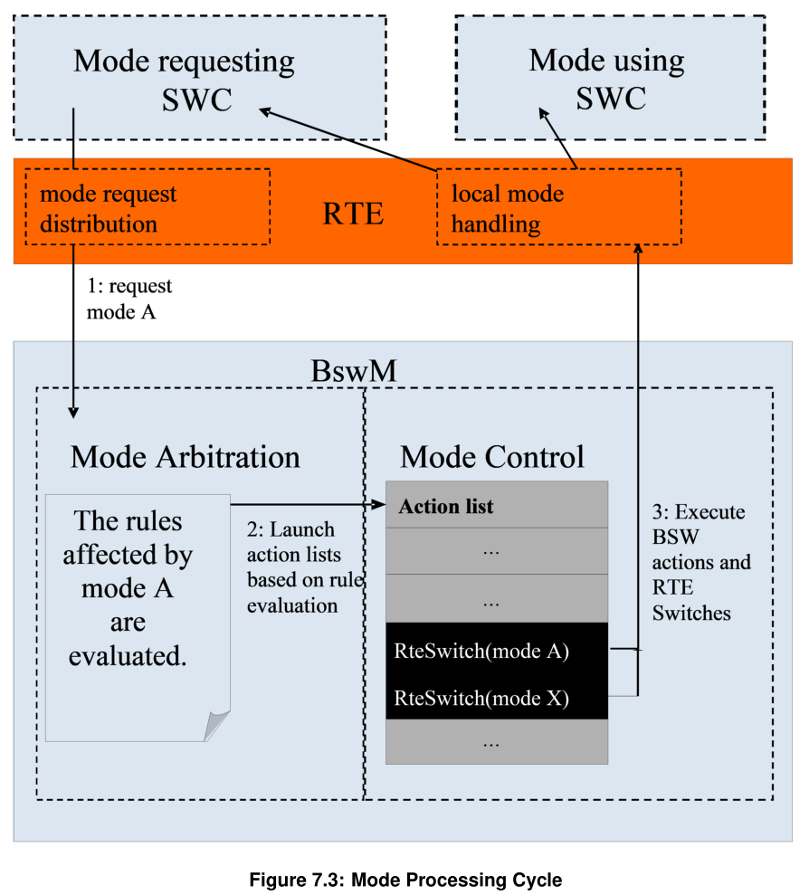
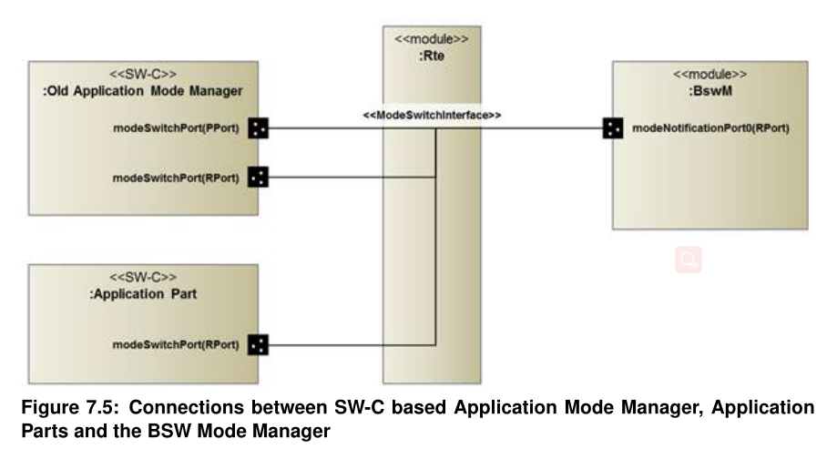

Function
功能描述¶
BSW模式管理器基本功能的操作可以描述为两个不同的任务：模式仲裁和模式控制。
模式仲裁部分启动模式切换，由从 SW-C 或其他 BSW 模块收到的模式请求和模式指示的基于规则的仲裁产生
模式控制部分通过执行包含其他BSW模块的模式切换操作的动作列表来执行模式切换。
BswM应该被视为一个模式管理框架模块，其中行为完全由其配置定义。
Mode Arbitration（仲裁）¶
BswM 执行的模式仲裁简单且基于规则。用于模式仲裁的规则在 BSW 模式管理器模块的配置中指定。
这些规则由平凡的布尔表达式组成，因此模式仲裁对运行时的影响很小
Arbitration Rules¶
规则是由一组模式请求条件组成的==逻辑表达式==。当输入模式请求和模式指示发生更改时，或在执行 BswM 主函数期间，将评估规则。评估结果（T rue 或 False）用于决定相应模式控制操作列表的执行。
Mode Conditions(条件) and Logical Expressions（表达式）.¶
组成模式仲裁规则的逻辑表达式可以使用不同的运算符，例如AND、OR、XOR、NOT和NAND。 表达式中的每一项对应于一个模式请求条件。 如果模式条件引用 BswMModeRequestPort，则该条件将验证请求或指示的模式是否等于或不等于特定模式。 如果条件引用 BswMEventRequestPort，则条件将验证请求端口是 SET 还是 CLEAR。 BswMEventRequestPort 事件请求不同于模式请求，因为请求者不向 BswM 发送请求的模式/值，因此，没有模式条件供 BswM 评估。 相反，只有 BswM 评估事件的接收。 当请求者发送/调用事件时，BswMEventRequestPort 将处于 SET 状态。 BswM 随后可以通过执行 BswMClearEventRequest 操作将 BswMEventRequestPort 置于 CLEAR 状态。 图 7.1 显示了具有两个条件的示例规则。 规则和可用逻辑操作集被定义为第 10.2 章中描述的 ECU 配置的一部分。

当 BswMModeCondition 具有 BswMConditionType = BSWM_EVENT_IS_SET 并引用 BswMEventRequestPort 时：
- 如果 BswMEventRequestPort 处于 SET 状态，则 BswMModeCondition 应评估为 TRUE
- 如果 BswMEventRequestPort 处于 CLEAR 状态，则 BswMModeCondition 应评估为 FALSE
当 BswMModeCondition 具有 BswMConditionType = BSWM_EVENT_IS_CLEARED 并引用 BswMEventRequestPort 时：
- 如果 BswMEventRequestPort 处于 SET 状态，则 BswMModeCondition 应评估为 FALSE
- 如果 BswMEventRequestPort 处于 CLEAR 状态，则 BswMModeCondition 应评估为 TRUE
当 BswM 在配置的 BswMEventRequestPort 上接收到事件时（例如，ComM 调用 BswM_ComM_InitiateReset），BswMEventRequestPort 应置于 SET 状态。
当在 BswMEventRequestPort 上执行 BswMClearEventRequest 动作时，BswMEventRequestPort 应置于 CLEAR 状态。
Requirements of Mode Arbitration¶
如上所述，BswM 接受模式请求和模式指示作为模式仲裁的输入。 模式请求通常源自应用程序 SW-C，但也可能源自其他 BSW 模块，例如 DCM。 模式指示总是由其他 BSW 模块发出，例如不同的总线特定状态管理器和 EcuM。 在本文档中，通用术语模式仲裁请求对应于模式指示或模式请求。
BswM 应根据传入的模式请求执行模式仲裁。
BswM 应根据传入模式指示执行模式仲裁。
BswM 应根据事件请求以及事件请求的清除执行模式仲裁。
Note
BswM 以相同的方式处理所有模式仲裁请求（请求和指示）。 它们通过在 BswMModeRequestSource 配置容器中选择相应的模式条件类型来配置。
BswM 应使用配置的规则执行模式仲裁
模式仲裁规则应使用模块配置参数进行配置。
不允许 BswM 使用先前仲裁规则评估的结果作为逻辑表达式的输入。
Node
禁止使用规则评估的结果作为其他规则评估的输入。 它在很大程度上满足于 BswM 配置容器的现有结构，因为逻辑表达式的可配置输入不包括先前规则评估的结果。
作为评估 BswM 仲裁规则的结果而调用的动作只能在动作列表的上下文中调用。
BswM 应根据传入的模式切换通知执行模式仲裁。
Immediate and Deferred Operation¶
有两种不同的方式来安排模式仲裁的处理。 它要么在模式请求/指示的上下文中==立即完成==，要么==延迟（循环）==到 BswM 的主要功能。
“立即”请求在调用者的上下文中执行。 系统集成商有责任确保操作列表的执行不会危及系统性能或一致性。
“立即”请求在调用者的上下文中执行。 系统集成商有责任确保操作列表的执行不会危及系统性能或一致性。
应该可以将 BswM 配置为在收到模式仲裁请求后立即执行模式仲裁。 这是通过将 BswMRequestProcessing 配置参数（在 BswMModeRequestPort 容器内）设置为 BSWM_IMMEDIATE 来配置的。
只有使用特定立即模式条件的模式仲裁规则才应由 BswM 在该特定模式请求/指示的上下文中进行评估。
应该（也）可以将模式仲裁推迟到执行 BswM 的主要功能之前。 这是通过将 BswMRequestProcessing 配置参数（在 BswMModeRequestPort 容器内）设置为 BSWM_DEFERRED 来配置的。
应该可以将 BswM 配置为在设置事件时立即执行模式仲裁。 这是通过将 BswMEventRequestProcessing 配置参数（在 BswMEventRequestPort 容器内）设置为 BSWM_IMMEDIATE 来配置的。
应该（也）可以将模式仲裁推迟到执行 BswM 的主要功能之前。 这是通过将 BswMEventRequestProcessing 配置参数（在 BswMEventRequestPort 容器内）设置为 BSWM_DEFERRED 来配置的。
在每次执行 BswM 的主要功能期间，应评估使用至少一个延迟模式条件的所有规则。
BswM 应推迟在其主要功能处理期间收到的模式仲裁请求，直到它完成。 任何此类延迟的 IMMEDIATE 请求应在 BswM 主函数退出之前直接处理。任何此类延迟的 DEFERRED 请求应在下一个后续 BswM 主函数中处理。
BswM 应推迟在处理 IMMEDIATE 请求期间收到的模式仲裁请求，直到它完成。 任何此类推迟的 IMMEDIA TE 请求应在处理原始 IMMEDIATE 请求后直接处理。 任何此类推迟的 DEFERRED 请求都应在下一个后续 BswM 主函数中处理。
BswM 实现可以选择使用保护机制（例如独占区域），以保证操作或 BswM 主要功能的执行不会被任何其他任务（例如更高优先级的任务）打断。
端口“更新”的术语说明：任何模式请求端口都有关联的值\状态。 更新一个端口意味着改变它的值\状态。
BswM 应在仲裁实际发生之前直接更新立即模式请求端口的值，而不是在模式请求端口被触发时更新。
当模式请求端口被触发时，BswM 将更新 DEFERRED 模式请求端口的值。
Arbitration(仲裁) Behavior(行为) after Initialization¶
初始化后 BswM 模式仲裁的行为由配置容器 BswMModeInitValue 控制。 该参数可以为配置中的每个 BswMModeRequestPort 配置一次。
如果容器 BswMModeInitValue 不存在或 ModeRequest 还没有初始值，则 BswM 应将相应的模式条件视为未定义并且不会将其用于模式仲裁，直到相应的模式仲裁请求已被第一次更新。
BswM 应仅仲裁在其逻辑表达式中不包含任何未定义模式条件的规则。
每个BswMModeRequestPort初始化后的初始值可以由配置容器BswMModeInitValue控制。
在定义 BswMModeInitValue 的情况下，BswM 应在 BswM 初始化时使用 BswMBswModeInitValue 或 BswMCompuScaleModeValue 初始化相应的 BswMModeRequestSource。 BswM 应拒绝包含单个 BswMModeInitValue 的 BswMBswModeInitValue 和 BswMCompuScaleModeValue 的配置。 该初始化值应用于仲裁规则，直到相应的模式仲裁请求已更新，例如 BswM_RequestMode 的每次调用都应更新 GenericRequest 模式。
Note
the Rte and SchM modes always have an intial value
在 BswM 初始化时，所有 BswMEventRequestPort 都应初始化为 CLEAR 状态。
Mode Control(控制)¶
BswM 的模式控制部分根据模式仲裁的结果执行所有必需的操作。 这是使用动作列表完成的。 动作列表是 BswM 在模式仲裁触发时执行的有序动作列表。
动作列表中的动作可以分为三种类型：
- 调用其他 BSW 模块或 RTE。
- 链接到要包含在执行中的==其他操作列表==。
- 模式仲裁规则。 当相应的动作列表被执行时，这些规则将被评估。 这样，就得到了规则的层次结构。
BswM 不需要存储或响应任何 BSW 模块特定返回值对其执行的操作。 因此，BSW 中的不同状态管理器将它们的当前状态指示给 BswM，以用作模式仲裁的输入。
但是，如果返回错误 (E_NOT_OK)，则 BswM 可以发出 Det Runtime Error 和/或取消当前正在执行的操作列表。

如图7.2所示，BswM可以包含多个Action List，一个Action List可以容纳多个action。 为了减少动作列表的总数，应该可以将它们级联起来。 动作列表的元素可以是具体动作或对另一个动作列表的引用，或者如上所述，模式仲裁要执行的规则。 应该有一个标志连接到每个动作列表条目，说明它的类型（动作/参考/规则）。 激活具有具体操作的列表的方式与激活具有引用的列表甚至混合列表的方式之间应该没有区别。
Mode Processing Cycle¶

- 模式请求器 SW-C 通过其发送端口请求模式 A。 RTE 分发请求，BswM 通过其接收端口接收请求。
- BswM 评估其规则作为接收到的模式仲裁请求的结果，或者在 BswM 主要功能的执行期间循环评估。
- 根据选择的执行方法执行相应的动作列表（参见“触发和条件动作列表”部分）。
- 在执行动作列表时，BswM 可能会发出一个或多个对 RTE 开关 API [6] 的调用，作为通知受影响的 SW-C 仲裁结果的动作。 任何 SW-C，尤其是模式请求者都可以注册以接收模式切换指示。
Note
注意，模式请求者只能从本地 BswM 接收模式切换指示； 对于本地代理 SW-C 发出的来自不同 ECU 的请求也是如此。
Requirements(要求) on Mode Control¶
BswM 应通过作为模式仲裁中规则评估结果执行的动作列表来执行模式控制。
对于模式仲裁的每条规则，BswM 应能够根据规则评估为 True 或 False 执行不同的操作列表。
动作列表包含 BswM 应以有序方式执行的一组动作。
动作列表可能包含指向 BswM 应包含在执行中的其他动作列表的链接。
动作列表还可以包括模式仲裁规则的链接，BswM 应在当前动作列表的执行范围内评估这些规则。
如果使用级联动作列表（即使用对其他规则或动作列表的引用），动作列表结构最多可包含七 (7) 个分层级别。
注意：此限制的目的是使 BswM 实现和生成器工具的测试成为可能。 该限制必须由生成器工具检查。
与在模式仲裁请求的上下文中评估的规则关联的动作列表应在模式仲裁触发时立即由 BswM 执行，而不是延迟到主函数执行。
基本原理(Rationale)：这允许在必要时对模式请求进行非常短的延迟。
如果顶层动作列表在模式仲裁期间被多个规则触发，这将导致在模式控制期间执行动作列表的单个触发器。
顶级动作列表是由顶级规则（即不嵌套在动作列表中的规则）直接执行的动作列表，并且不嵌套在另一个动作列表中。 [SWS_BswM_00223] 仅适用于顶级操作列表。[SWS_BswM_00223] 不适用于嵌套规则和嵌套操作列表，因为它们在父操作列表中的顺序是用户定义的，应予以遵守。
如果在模式控制期间要执行多个顶级动作列表，则执行顺序应从==最高==的 BswMActionListPriority 开始，并继续到最低的。 在 BswMActionListPriority 相同==的情况下，执行顺序是==任意的
对于不是顶级动作列表的动作列表，BswMActionListPriority 将被忽略。
没有 BswMActionListPriority 的动作列表应被解释为具有等于 0 的 BswMActionListPriority
BswM 应拒绝 BswMActionList 包含具有相同值 BswMActionListItemIndexes 的 BswMActionListItems 的配置
当执行 BswMActionList 时：BswM 应从具有最低值 BswMActionListItemIndex 的 BswMActionListItem 开始。 随后的 BswMActionListItems 应按其 BswMActionListItemIndex 的递增顺序执行。
在动作列表中，配置的 BswMActionListItemIndexes 不一定需要连续或从零开始。 BswM 将开始执行具有最低索引的操作列表项，并继续执行具有最高索引的操作列表项。 如果索引有“间隙”（即不连续），这些间隙将被忽略。
Triggered and Conditional action lists¶
有两种方法可以基于规则的评估来执行动作列表。要么在每次使用相应的结果评估规则时执行，要么仅在评估结果与之前的评估发生变化时执行。 使用 BswMActionListExecution 参数（在 BswMActionList 容器内）配置动作列表的执行方法。
但是，对于不被规则直接引用的嵌套动作列表，BswMActionListExecution 参数（例如 BSWM_CONDITION 或 BSWM_TRIGGER）没有意义，并且不会影响嵌套动作列表的执行方式。 每当执行其父动作列表时，相应地执行这样的嵌套动作列表（即不被规则直接引用）。
如果为触发执行配置了 True 动作列表，则 BswM 应仅在相应规则的评估从 False 变为 True 时执行它。
如果为触发执行配置了 False 操作列表，则 BswM 应仅在相应规则的评估从 True 变为 False 时执行它。
如果为条件执行配置了 True 动作列表，则 BswM 应在每次相应规则被评估为 True 时执行它。
如果 False 动作列表被配置为条件执行，BswM 将在每次相应规则被评估为 False 时执行它。
如果动作返回 E_NOT_OK 并且相应的 BswMAbortOnFail 配置参数设置为“true”，则 BswM 将中止动作列表的执行。
Available Actions¶
可在动作列表中使用的一组动作是预定义的。 这样做的原因是为了简化 ECU 配置和 BswM 配置代码的生成。
BswM 应能够执行由配置容器 BswMAvailableActions 定义的预定义操作。
BswM 应能够调用 AUTOSAR BSW 中的任何函数，即使它不在 BswMAvailableActions 中定义的标准化操作中。
BswM 应能够调用用户定义的函数
用户定义函数的参数及其值应在 ECU 配置时使用 BswMUserCallout 配置容器定义。
Behavior of Mode Control after Initialization¶
BswM 初始化后模式控制的行为由 BswMRuleInitState 参数（在 BswMRule 容器内）配置。 它定义了“先前的评估结果”，用于在初始化后第一次评估规则后决定执行什么动作列表时使用。 配置参数 BswMActionListExecution（在 BswMActionList 容器内）也会影响初始化后的动作列表执行。
BswMRulelnitState BswMActionListExecution Rule evaluated to true Rule evaluated to false BSWM_UNDEFINED BSWM_TRIGGER Execute "true" action list Execute "false" action list BSWM_TRUE BSWM_TRIGGER Do nothing Execute "false" action list BSWM_FALSE BSWM_TRIGGER Execute "true" action list Do nothing BSWM_UNDEFINED BSWM_CONDITION Execute "true" action list Execute "false" action list BSWM_TRUE BSWM_CONDITION Execute "true" action list Execute "false" action list BSWM_FALSE BSWM_CONDITION Execute "true" action list Execute "false" action list
Waiting Functionality¶
有时需要延迟特定操作或等待进一步的模式控制。为此，将定时器处理添加到 BswM。
计时器始终由作为 BswMModeRequestSource 的 BswMTimer 和控制此 BswMTimer 的相应操作（请参阅 BswMTimerControl）组成，即计时器只能在操作 BswMTimerControl-> BswMModeRequestSource/BsMTimer 的上下文中控制。 BswMTimer 的值（例如 BSWM_TIMER_STOPPED、BSWM_TIMER_STARTED、BSWM_TIMER_EXPIRED）可以通过 BswM 中配置的其他规则进行评估，以触发操作列表。 没有外部接口来控制或操纵定时器。
每个 BswMTimer 都应在初始化期间停止（BSWM_TIMER_STOPPED）。
动作 BswMTimerAction BSWM_TIMER_START 应使用相应的定时器值（参考 BswMTimerValue）重新加载参考的 BswMTimer（通过 BswMTimerRef）并将定时器的模式更改为 BSWM_TIMER_STARTED。
Note
计时器只能通过 BswMTimerAction 操作重新加载（不可能自动重新加载）
BSWM_TIMER_STARTED 模式下的每个 BswMTimer 应在 BSWM_MainFunction 期间递减计时器（按 BSWM_MainFunction 的循环时间）。
Note
BswMTimer 分辨率是 BswM_MainFunction 周期的倍数。 此外，BswMTimer 的准确性取决于 BswM_MainFunction 的准确性。
如果处于模式 BSWM_TIMER_STARTED 的 BswMTimer 到期，其模式应更改为 BSWM_TIMER_EXPIRED，然后 BswMTimer 模式应在同一 BswM_MainFunction 周期中仲裁。
动作 BswMTimerAction BSWM_TIMER_STOP 应立即停止引用的 BswMTimer（通过 BswMTimerRef）并将其模式更改为 BSWM_TIMER_STOPPED。
BswM 应忽略与 BswMTimer 关联的 BswMRequestProcessing（例如，IMMEDIATE、DEFERRED）配置。BswM 应始终将 BswMTimer 的处理视为已延迟； BswMTimer 在 BswM 主函数期间被仲裁。
Note
BswM_TIMER_EXPIRED 模式下的 BswMTimer 不会被 BswM 自动设置为 BSWM_TIMER_STOPPED。 用户需要配置一个动作，以便将 BswMTimer 从 BSWM_TIMER_EXPIRED 转换到另一种模式。 如果没有配置将 BswMTimer 转换出 BSWM_TIMER_EXPIRED 模式的操作，则 BswMTimer 将在接下来的 BswM 主函数周期中继续被仲裁为 BSWM_TIMER_EXPIRED。
Multi Partition Support¶
对于多个 BswM 实例，每个 BswM 实例将根据自己的配置集生成自己单独的服务组件描述。 集成商需要将这些单独的服务组件分配给相应的分区。
BswM 存在于==每个分区==中，具有特定于分区的配置（每个分区的 BswMConfig 的==单独实例==）。 包含的动作列表在本地分区执行。
BswM Interfaces and Ports¶

Mode Request Ports¶
BSW 模式管理器必须使用在 SW-C 的上下文中定义的接口声明一个接收器端口：
RequirePort AppModeRequestInterface modeRequestPort_{ArbName}_{ReqName};
要读取当前请求的模式，BSW 模式管理器实现必须调用：
Rte_Read_modeRequestPort_{ArbName}_{ReqName}_requestedMode( &<variable> );
Mode Switch Ports¶
与模式请求一样，BSW 模式管理器仅引用在其为模式开关提供端口的相应 SW-C 描述的上下文中定义的模式开关接口。 对于上面的例子，模式开关的声明是：
ProvidePort AppModeInterface modeSwitchPort_{ModConName} _{SwitchName};
配置参数BswMModeSwitchInterfaceRef引用此模式切换接口。
要切换当前活动模式，BSW 模式管理器实现必须将以下调用之一插入其操作列表：
Rte_Switch_modeSwitchPort_{ModConName}_{SwitchName}_currentMode( <new_mode> );
SchM_Switch_modeSwitchPort_{ModConName}_{SwitchName}_currentMode( <new_mode> );
Notifications of Mode Switches¶
除了模式请求之外，当前活动的模式也可以用作模式仲裁的输入。 对于应用程序和车辆模式，BSW 模式管理员需要注册为模式用户。 然后它通过模式切换端口接收有关模式更改的通知。 对于上面的例子，模式通知的声明是:
RequirePort AppModeInterface modeNotificationPort_{ArbName}_{ModeName};
要读取当前活动模式，BSW 模式管理器实现必须调用以下函数之一：
Rte_Mode_modeNotificationPort_{ArbName}_{ModeName}_currentMode(&<variable> );
SchM_Mode_modeNotificationPort_{ArbName}_{ModeName}_currentMode( &<variable> );
如果配置了增强型 Rte_Mode 或 SchM_Mode，BSW 模式管理器实现必须调用以下函数之一：
Rte_Mode_modeNotificationPort_{ArbName}_{ModeName}_currentMode(&<variable>, &<previousmode>, &<nextmode> );
SchM_Mode_modeNotificationPort_{ArbName}_{ModeName}_currentMode( &<variable>, &<previosmode>, &<nextmode> );